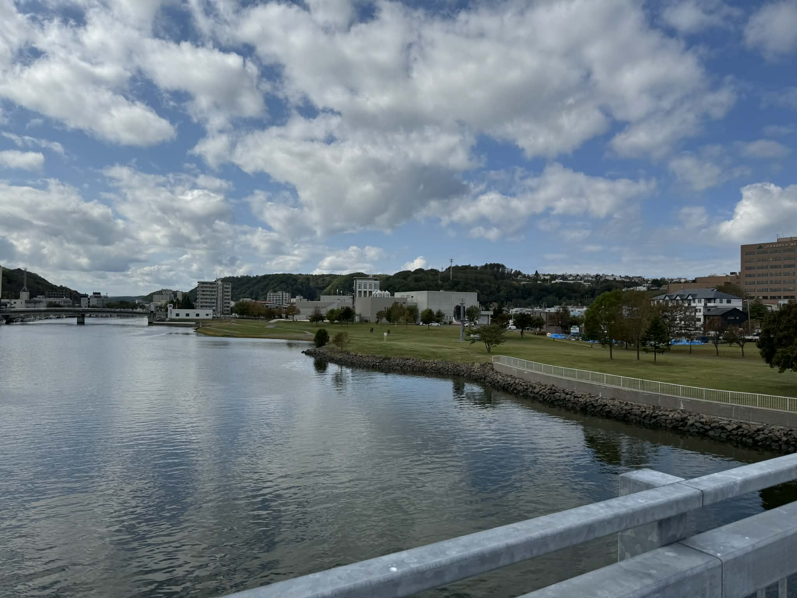
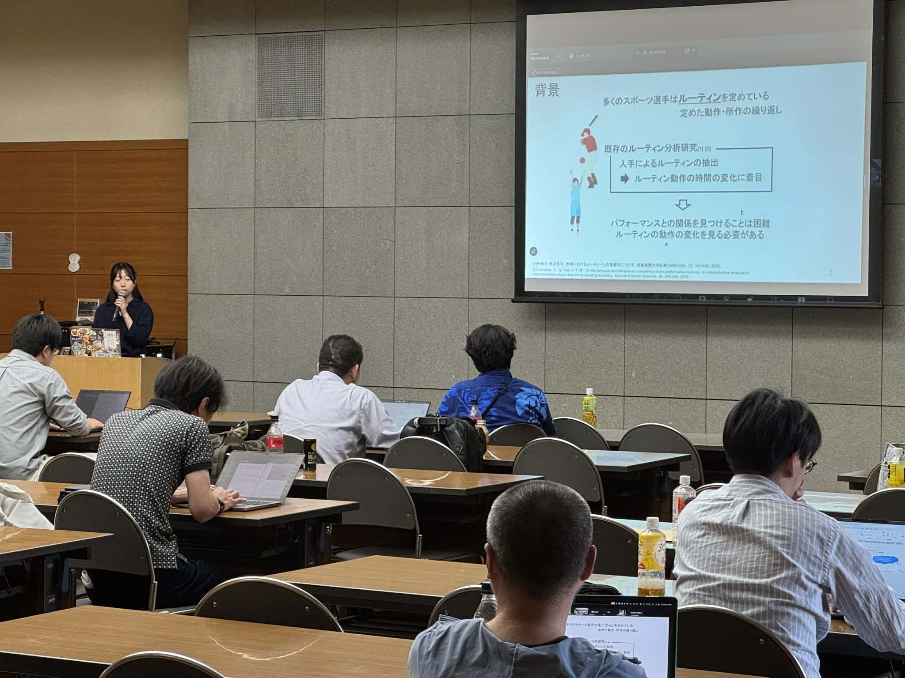
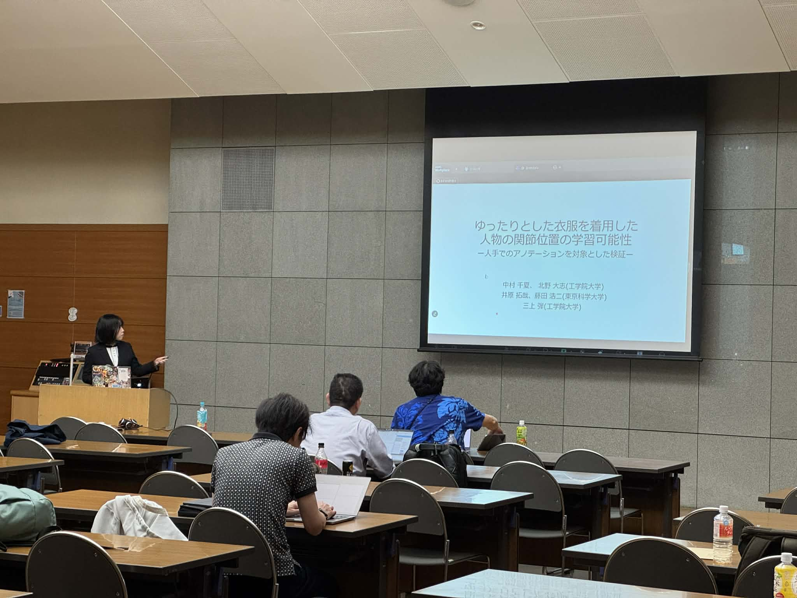

2025/10/2-3 MVE研究会＠網走にてM2小川さん、B4中村さんが発表
毎年恒例の北海道での合同研究会が開催されました。今年は網走ということで北海道シリーズとしてはとても行きやすい場所でした。
M2の小川さん、B4の中村さんがそれぞれ発表しました。
- 小川莉莉香，松村聖司，西條直樹，柏野牧夫，三上弾，類似動作に着目した野球選手のルーティンの構造化 MVE2025-18, 2025
- 中村千夏, 北野大志, 井原拓哉, 藤田浩二, 三上弾, ゆったりとした衣服を着用した人物の関節位置の学習可能性 ～ 人手でのアノテーションを対象とした検証 ～, MVE2025-19, 2025
北海道シリーズでは例年学生の懇親会参加率が高く（他大学の皆さんも含めて）、学生間の交流も広がるようで楽しい会合です。
  